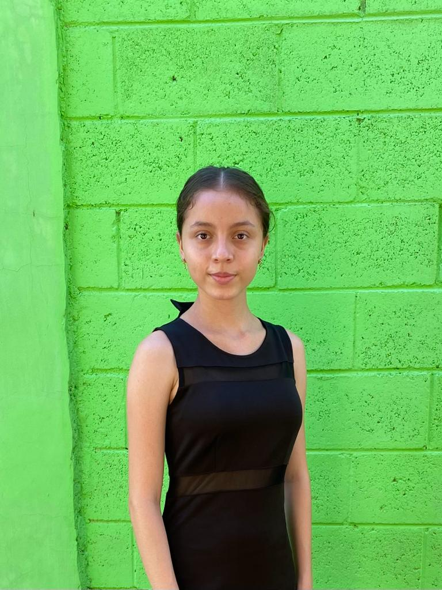

yeslygalindo15@gmail.com
yeslygalindo15@gmail.comAbout Me
¿Quién es Yesly?
Hola, mi nombre es Yesly Chevez una joven con muchas aspiraciones y deseo de poder superarse actualmente soy estudiante de segundo año de bachillerato en el Complejo Educativo Ofelia Herrera así mismo estoy cursando mi tercer año en la beca de ¡Supérate! Grupo Q. Así también he formado parte de muchos cursos para adquirir mas conocimientos como por ejemplo cursos de matemática, talleres de costura. Repostería y así también certificaciones de Microsoft. Soy una persona que le gusta ayudar a los demás, me gusta formar partes de lugares donde ayudan a las personas es debido a esto que descubrí que me gusta la carrera de medicina siento que puedo ser yo misma y que además de ayudar a los y además innovar el ámbito de la salud a través de las nuevas tecnologías. Por el momento para poder tener un conocimiento previo de la tecnología me he sometido a ciertas certificaciones como lo son: Microsoft Excel 2016 y así también Certificación de ITS JavaScript, también me he sometido a cursos de HTML y CSS. También por otra parte estoy recibiendo cursos de ingles en el programa de beca en el que estoy.
 © Mi sitio
© Mi sitio